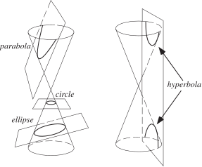
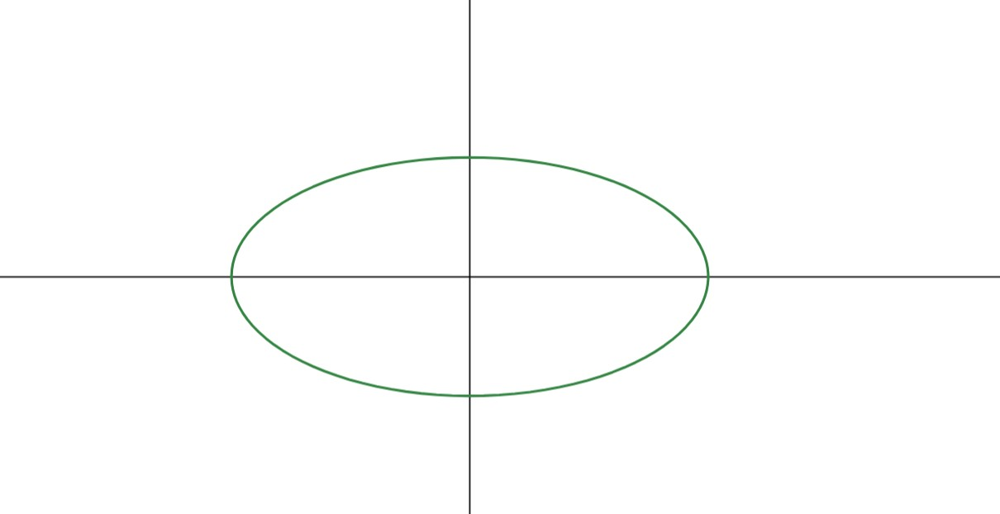
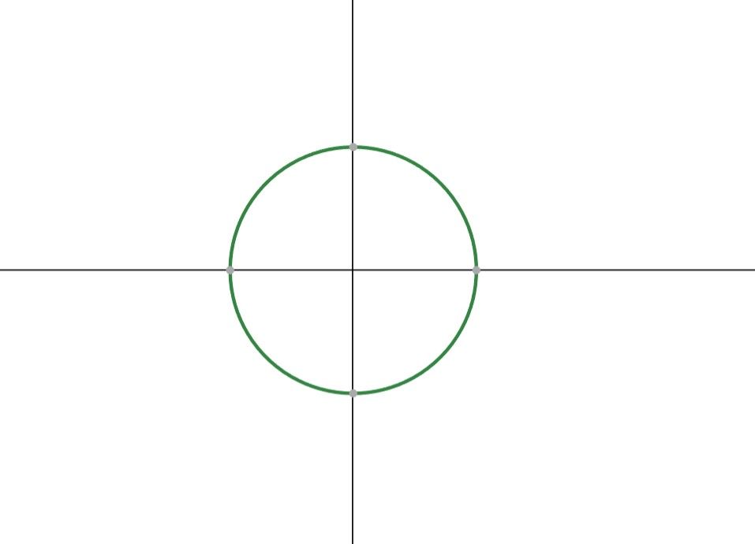
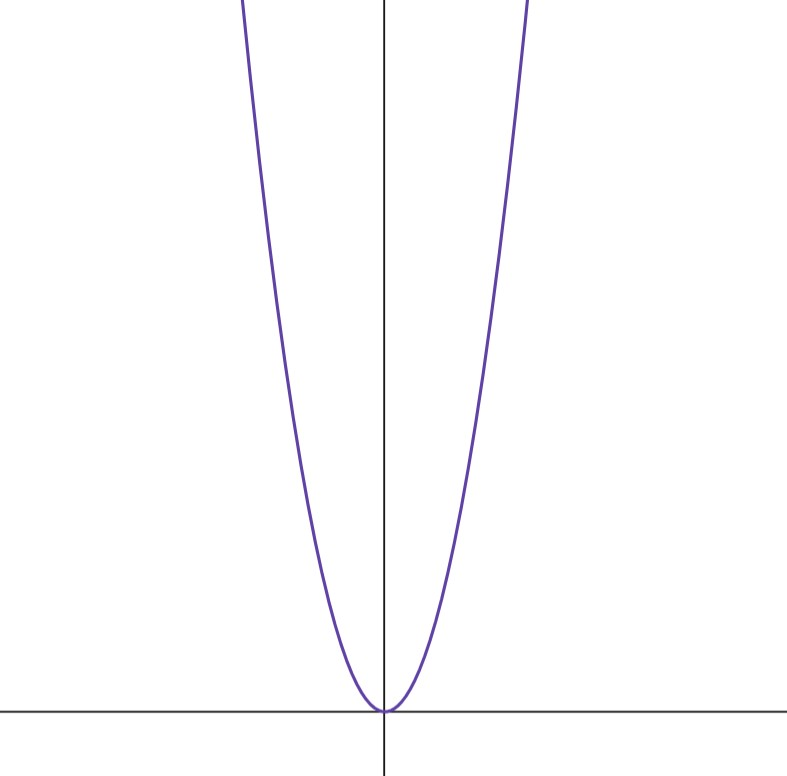

Conic Sections Introduction
What are Conic Sections?
Conic sections are the graphs formed when a cone (or more precisely a double-cone) is cut with a plane. This can be seen in the image below. This definition is elaborated further in the Maths of Conic Sections page, in case you needed more context.
Here is how we can seperately define the four conic sections:
Conic Sections - The Ellipse
An ellipse is the set of all points in the plane, the sum of whose distances from two fixed points is a given positive constant that is greater than the distance between the fixed points. The fixed points are known as foci.
Conic Sections - The Circle
A circle is the set of all points equidistant from a given center. A circle can be thought of as a type of elipse, where the two foci are on the same point.
Conic Sections - The Parabola
The parabola can be defined as all the set of points in the plane that are equidistant from a fixed line and not on the line, called the directrix, and from a point but not on a fixed point, called the focus.
Conic Sections - The Hyperbola
A hyperbola is the set of points in a plane that satisfy the following condition:
Call the point \(P\), and the foci \(F_1\) and \(F_2\).
Now, consider the distance from the point to each foci (we will take the absolute value to remove any negative distances), which can be denoted by \(|PF_1|\) and \(|PF_2|\).
The difference between these distances must be a constant, which we can call \(2a\). Therefore, we end up with the equation: \(|PF_1| - |PF_2| = 2a\).
Whispering Gallery Proof
(St Paul's Cathedral)
The whispering gallery proof - It occurs in certain architectural structures , who's walls have an elliptical shape especially domes. The most famous example is St.Paul's Cathedral.
Sound waves can travel along the curved surface of the elliptical walls, allowing someone standing at one point in the room to hear whispers from someone standing on the opposite side of the room even if the person is not directly in your eye view . This is due to the fact that the waves reflect off the dome's surface area and maintain their energy over a distance.
The connection between whispering galleries and conic sections, lies in the way sound waves behave and reflect in curved spaces. In conic sections, particularly ellipses, there are unique properties regarding how lines reflect . In a whispering gallery, the curved surface can be thought of similarly to an ellipse, where sound waves originating from one focal point can reflect and coverage at another focal point, called the foci.
Research links
- Conic Sections Orbits - Whispering Gallery Proof https://www.gregegan.net